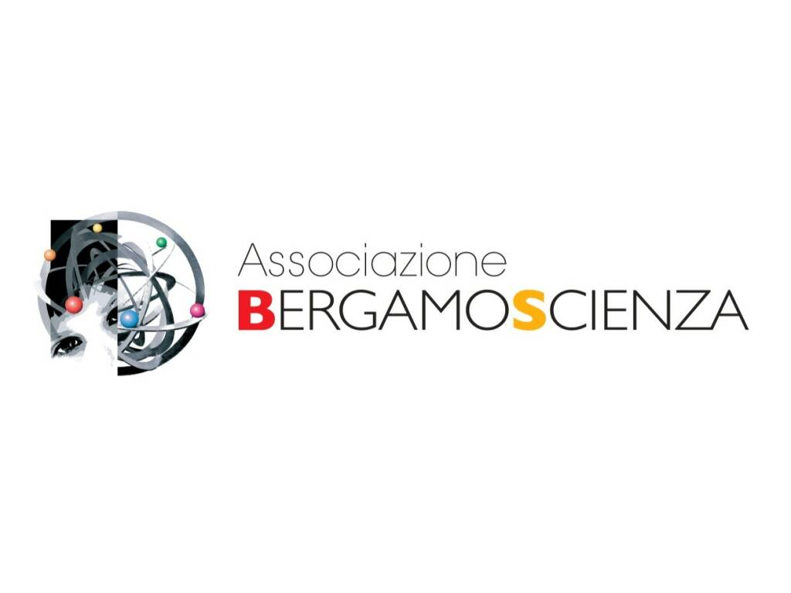

Che tempo farà? La Meteorologia
Un percorso interattivo di divulgazione scientifica progettato per spiegare la fisica dell'atmosfera, dei fenomeni meteorologici estremi e il funzionamento dei moderni strumenti di misurazione climatica.
filter_drama Studio e monitoraggio dei sistemi nuvolosi e dinamiche atmosferiche
lab_research Laboratorio Didattico Interno
Durante la prima settimana, l'attività si è concentrata all'interno dei laboratori scolastici. Abbiamo accolto classi di studenti delle scuole elementari e medie guidandoli attraverso esperimenti pratici mirati, come la simulazione della pressione atmosferica e la riproduzione di una nuvola in bottiglia, traducendo leggi fisiche complesse in concetti accessibili e affascinanti.
holiday_village Scuole in Piazza
Nel fine settimana conclusivo, il progetto si è trasferito all'aperto nella cornice di "Scuole in Piazza". In questa fase di massima apertura al pubblico e alla cittadinanza, abbiamo allestito stand interattivi esponendo e spiegando il funzionamento pratico di una vera stazione meteorologica professionale dotata di anemometro, barometro e pluviometro.

photo_camera Stand espositivo e dimostrazioni pratiche sul campo
insights Soft Skills Sviluppate
-
record_voice_over
Public Speaking Adattamento del registro linguistico e comunicativo in base all'età dell'interlocutore (bambini, ragazzi, adulti).
-
co-working
Teamworking Coordinamento sinergico con i compagni di classe nella gestione dei flussi di visitatori e nella turnazione degli esperimenti.
-
psychology
Problem Solving scientifico Capacità di risolvere imprevisti tecnici durante le dimostrazioni dal vivo e rispondere a domande complesse del pubblico.
history_edu Diario Riflessivo & Considerazioni Finali
L'esperienza come divulgatore per BergamoScienza ha rappresentato una pietra miliare del mio percorso PCTO. Spiegare la meteorologia e la fisica dell'atmosfera mi ha permesso non solo di consolidare le mie conoscenze teoriche, ma soprattutto di comprendere il valore sociale e civico della diffusione della cultura scientifica.
Il forte involvement richiesto sia nei laboratori interni sia nell'affollata cornice di "Scuole in Piazza" ha potenziato notevolmente la mia sicurezza nell'esposizione e la mia flessibilità relazionale, fornendomi competenze trasversali d'eccellenza spendibili in qualunque contesto accademico e lavorativo futuro.